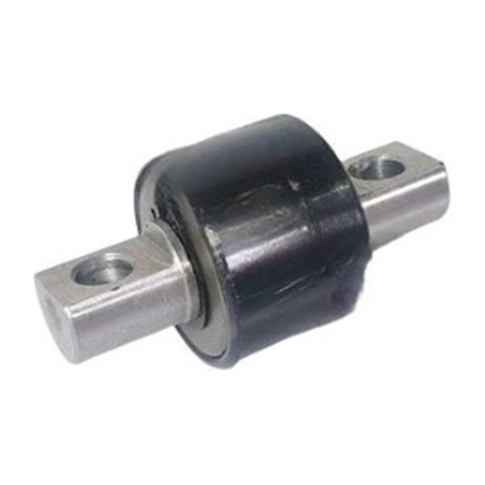
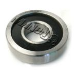
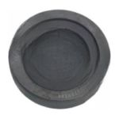
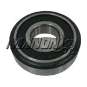
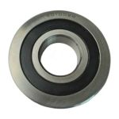
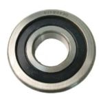
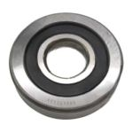
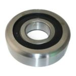
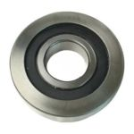

Parts › Mast & Upright › 39956-402

Available
Email for a quote
Mitsubishi 39956-402 Side Roller
| OEM part number | 39956-402 |
| Fits | Mitsubishi |
| Models / notes | FD10/15/18-F16D |
| Category | Mast & Upright |
| Type | Aftermarket replacement |
Send us the quantity you need and we'll reply with pricing, usually within 24 hours. Not the exact part? We can source it. Send the part number or a photo.
More Mast & Upright

20558-4044010227Mast Roller
20559-4034010028Mast Roller
20562-4024511530-25Mast Roller
21838-4014010028Mast Roller
31386-401409930Mast Roller
37552-4015013234Mast Roller
37553-4014511732Mast Roller
37554-4024511832-25Mast Roller